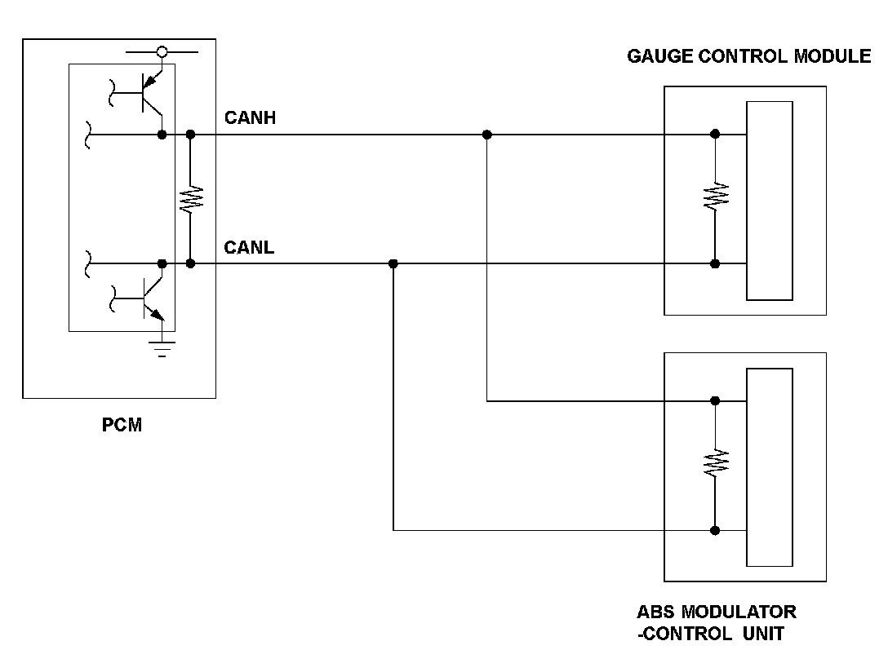
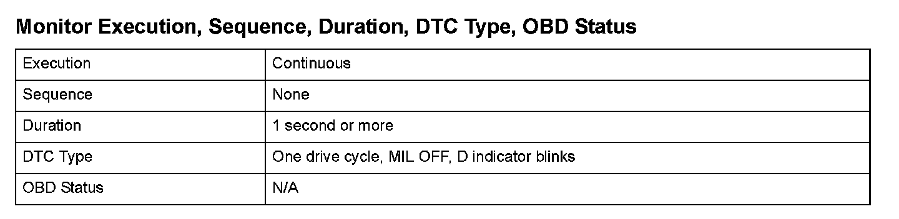
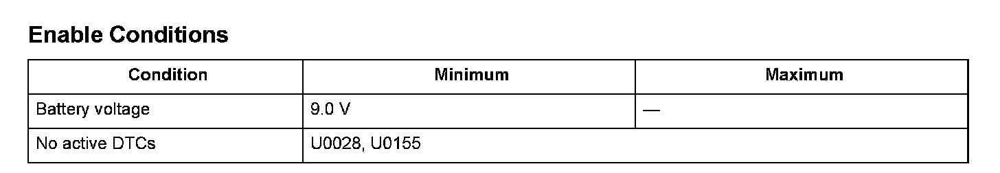

U0121
DTC U0121: Lost Communication with ABS Modulator Control Unit
General Description
The controller area network (CAN) transmits/receives multiple signals to/from the multiple control modules simultaneously by sing two signal lines (CANH and CANL).
When the powertrain control module (PCM) does not receive the signals from the ABS modulator-control unit via the CAN lines for more than a set time, the PCM detects a malfunction and a DTC is stored.

Monitor Execution, Sequence, Duration, DTC Type, OBD Status

Enable Conditions
Malfunction Threshold
No signals from the ABS modulator-control unit via the CAN lines are received for at least 1 second.
Diagnosis Details
Conditions for illuminating the indicator
When a malfunction is detected, the D indicator blinks, and the DTC and the freeze frame data are stored in the PCM memory. The MIL does not come on.
Conditions for clearing the DTC
The DTC and the freeze frame data can be cleared by using the scan tool Clear command or by disconnecting the battery.